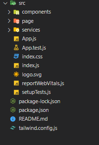
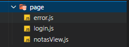
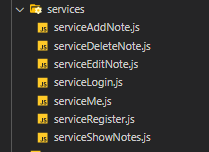

/Notes App
-Why start this project?
I made this porject because i wanted to improve and practice all what i learned about React, python and MYSQL.
-Where does the data comes from?
For this project i created an API that is a CRUD, also my api can validates the identity of the user, basically a login.
All the data comes from the database that is connected by my api and that is fed by the data that the user inserts in the frontend, such as registration, creating a note, etc.
Here you can check my code Github.
-Technology stack
For this project i used REACT, TAILWIND, PYTHON and MYSQL.
-How it works?
1. If you do not have an account you have to register.
2. After login, if is your first time in the app, you need to "Add a new note".
3. Finally you can edit, remove and add new notes.
-Structure
This app has the following structure:

I use the folder "page" for keep the "template pages" these pages are where i build the login page and the board page with the components, here we have the login page, the notas board page and the error page:

I use the folder "services" for keep all the calls to the api and each js archive keeps a especific call to the api:
